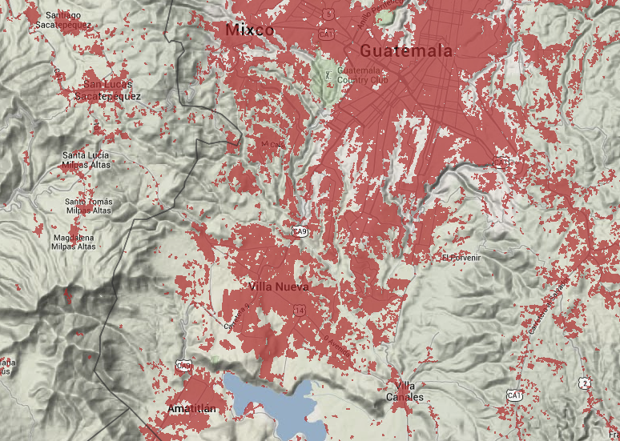
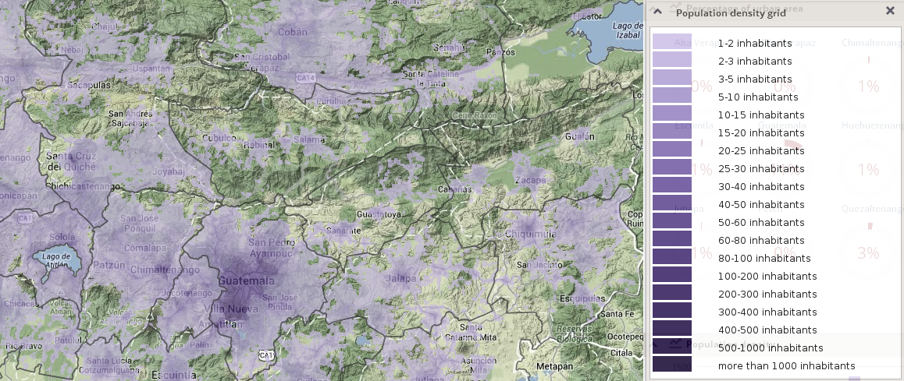

This scope provides an example of analysis based on Global urban footprint dataset. So far, coverage for two Central American countries - Panama and Guatemala - is available in frame of this analysis.
The dataset is a binary mask of urban areas, as mapped in the year 2010:

Information on urban areas footprint is complemented by information on population distribution and density, once again represented by WorldPop grid:

Only mono-temporal analysis is provided in frame of this scope.